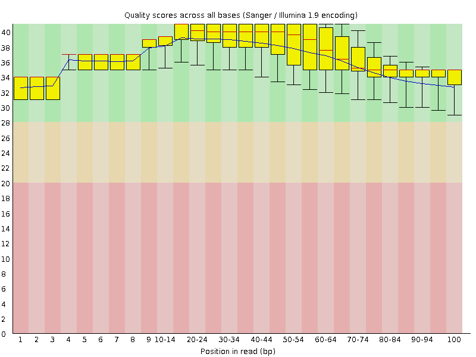
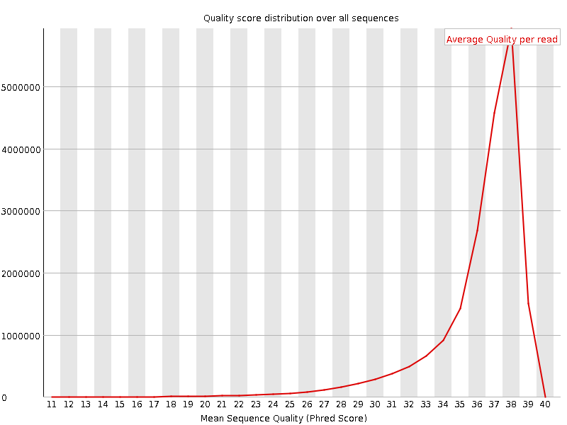
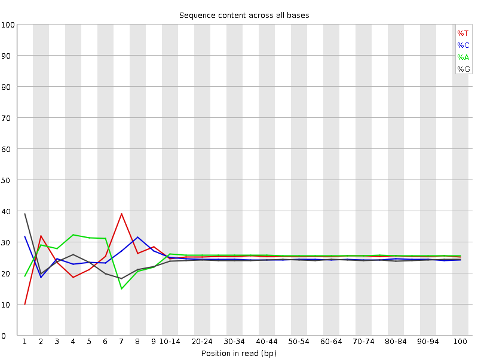
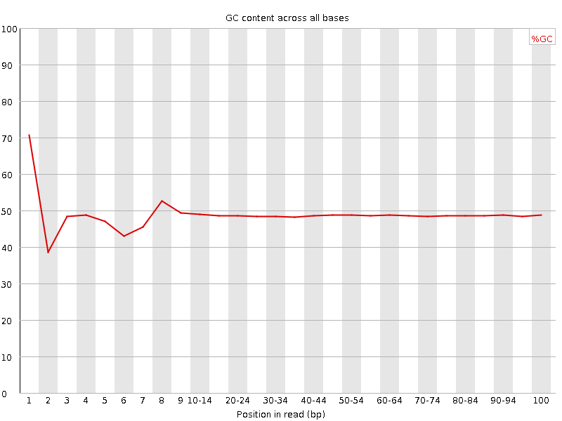
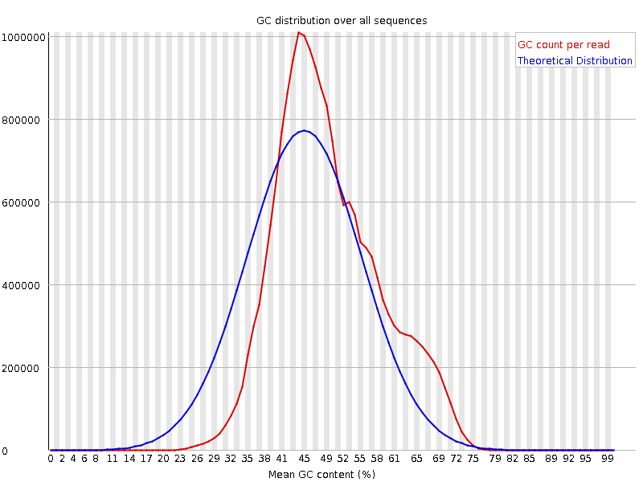
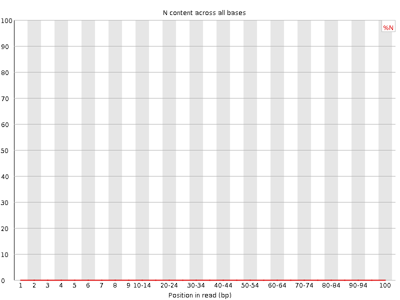
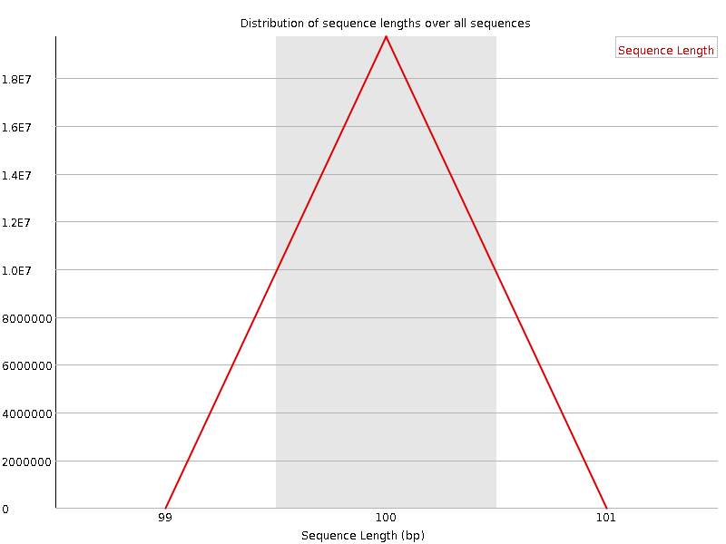
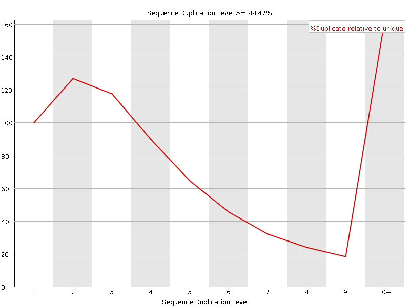
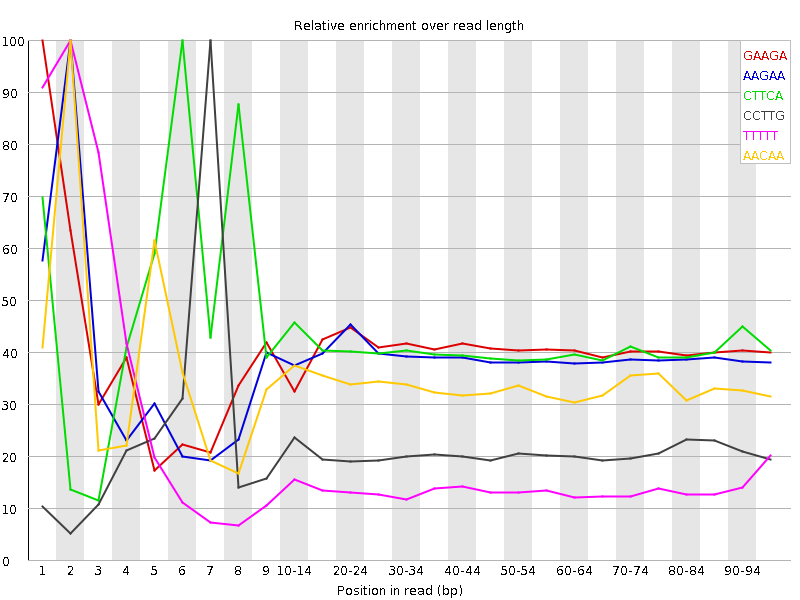

![[OK]](Icons/tick.png) Basic Statistics
Basic Statistics
| Measure | Value |
|---|---|
| Filename | BM_05_1_R1.clean.fq.gz |
| File type | Conventional base calls |
| Encoding | Sanger / Illumina 1.9 |
| Total Sequences | 19729525 |
| Filtered Sequences | 0 |
| Sequence length | 100 |
| %GC | 48 |
Per base sequence quality

Per sequence quality scores

![[FAIL]](Icons/error.png) Per base sequence content
Per base sequence content

Per base GC content

Per sequence GC content

Per base N content

Sequence Length Distribution

Sequence Duplication Levels

![[WARN]](Icons/warning.png) Overrepresented sequences
Overrepresented sequences
| Sequence | Count | Percentage | Possible Source |
|---|---|---|---|
| AATTCGAACCTCTGTAACACTCAGACCACGCTGATGCCCAGCGCCTGTTT | 38577 | 0.19552928922515872 | No Hit |
| AATTCCCAGTACCAATACGCCCCGCCCTGCCACTCATCGCAGTACTGTTG | 35025 | 0.1775258147370502 | No Hit |
| AATTCGAGGCGGTACAGGTGTTCTCCCGTATTGTTGACATGCCAGCGGGT | 34684 | 0.1757974406378258 | No Hit |
| AATTCTATGAGTAAACTTGGTCTGACAGTTACCAATGCTTAATCAGTGAG | 33860 | 0.17162095894351234 | No Hit |
| AATTCCCCTTCAGTAGAAGGGCACACCGGTATCCCCGCCCGACAACGACG | 28901 | 0.1464860405914486 | No Hit |
| AATTCCTGGCCTATTTCCCTAAAGGGTTTATTGAGAATATGTTTTTCGTC | 28674 | 0.14533548070721417 | No Hit |
| AATTCCCCTTGGTTGCAAGGGAACGATGCGTAATGTGTGTATTGCCGTTG | 28356 | 0.1437236831601369 | No Hit |
| AATTCATTGAAGCATTTATCAGGGTTATTGTCTCATGAGCGGATACATAT | 25730 | 0.13041368203238546 | No Hit |
| AATTCAGTCATCTGAAAGGGTTAACGTGAAGTACCGTTATGAGCTGACGG | 21991 | 0.11146238948986353 | No Hit |
| AATTCGGAAATGTGCGCGGAACCCCTATTTGTTTATTTTTCTAAATACAT | 21754 | 0.11026114414817387 | No Hit |
| AATTCACAGGTGTTCTCCCGTATTGTTGACATGCCAGCGGGTCGGGGAAA | 20940 | 0.10613534791131567 | No Hit |
Kmer Content

| Sequence | Count | Obs/Exp Overall | Obs/Exp Max | Max Obs/Exp Position |
|---|---|---|---|---|
| GAAGA | 4348830 | 2.2881956 | 5.6494226 | 1 |
| AAGAA | 4492480 | 2.2219315 | 5.694067 | 2 |
| CTTCA | 3993600 | 2.0939238 | 5.060102 | 6 |
| CCTTG | 3688980 | 2.0576844 | 9.762573 | 7 |
| TTTTT | 4046770 | 2.0130115 | 12.568045 | 2 |
| AACAA | 3912135 | 1.9055583 | 5.618255 | 2 |
| CTCCA | 3458830 | 1.8745275 | 5.2534375 | 6 |
| CTTGA | 3433460 | 1.8279504 | 6.523007 | 8 |
| AAAAA | 3586595 | 1.6674415 | 6.812274 | 2 |
| TTGAT | 3214800 | 1.6558467 | 5.2341204 | 9 |
| TCCAG | 2890560 | 1.5906721 | 5.1106114 | 7 |
| TTGAA | 2940570 | 1.4942518 | 5.098684 | 7 |
| TCCAA | 2819360 | 1.4583879 | 5.2992444 | 7 |
| GGCAA | 2580645 | 1.4226205 | 5.0142264 | 1 |
| ATCCA | 2729855 | 1.4120889 | 6.6329927 | 6 |
| GAAAA | 2851050 | 1.4100981 | 6.2944326 | 1 |
| TCCAC | 2521820 | 1.3667109 | 5.0757737 | 7 |
| CCCTT | 2372670 | 1.3033881 | 10.772287 | 6 |
| TTCCC | 2180425 | 1.1977814 | 12.623584 | 3 |
| AAATC | 2340270 | 1.1554422 | 5.317781 | 4 |
| TCCCC | 1981900 | 1.1253418 | 11.307688 | 4 |
| AATTC | 2226565 | 1.1142728 | 24.471733 | 1 |
| GTCAA | 2024800 | 1.0635076 | 5.3815455 | 1 |
| ATTCC | 1916860 | 1.0050478 | 13.775345 | 2 |
| CCCCT | 1542645 | 0.87592846 | 10.792096 | 5 |
| TTCGA | 1395650 | 0.74303436 | 5.483594 | 3 |
| ATTCG | 967350 | 0.5150105 | 6.5145664 | 2 |